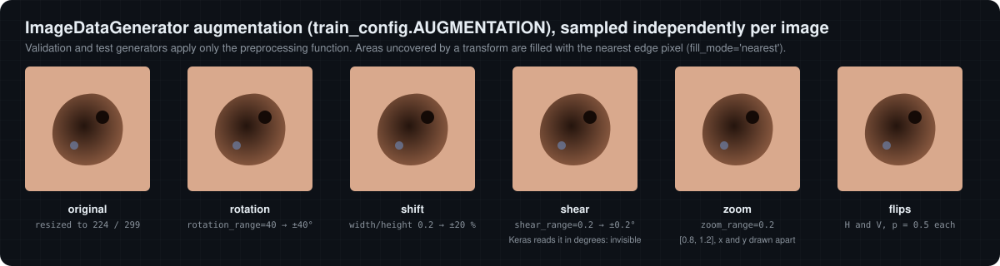

How a skin image becomes a decision-support report
This lab follows one image through the Streamlit application, stage by stage. Every widget re-implements the exact rule used in the Python code, so what you see here is what the project computes. Where the browser cannot run a component (the CNNs and CLIP), the widget says so and works on explicit, labelled inputs instead.

Labels and data
Every model ends in a 7-way softmax whose indices are fixed by CLASS_LABELS in classification.py. Training folders are read by Keras in alphabetical order (AKIEC, BCC, BKL, DF, MEL, NV, VASC), which matches those indices.
Two different rules use these labels. The red alert banner and the "ALERT" line of the explanation fire for indices 0, 1 and 4. The history page counts a "Malignant finding" whenever the lesion-type string contains Malignant, which also includes VASC ("Malignant/Benign").
Class imbalance and balanced class weights
The models are meant for HAM10000 (Tschandl et al., 2018), whose classes are strongly imbalanced. train.py passes compute_class_weight('balanced') to fit, i.e. wc = N / (K · Nc), so each class contributes equally to the expected loss.
Input validation: is this a skin image?
ImageValidator.validate_image runs three checks in order and stops at the first failure. It runs on every upload, before the user presses "Analyze Image".

CLIP ViT-B/32 embeds the image and two prompts. With unit-norm embeddings, the score of each prompt is a cosine similarity s; the code applies softmax directly to the two cosines.
p = σ(sskin − snon) stays within about 0.47 to 0.53 for realistic cosine gaps, so the reported "confidence" carries little information. The accept or reject decision is unaffected, because p ≥ 0.5 exactly when sskin ≥ snon under either scaling.Gate 3 (CLIP) needs the ViT-B/32 weights (about 340 MB) and PyTorch and runs only in the Python app. The resize is only applied when the height exceeds 100 px, exactly as in the code.
Preprocessing: pixels to tensors
MelanomaClassifier.preprocess_image loads the file with Keras (PIL), resizes it to the backbone's input size, applies that backbone's preprocess_input and then divides by 255. train.py uses the same function, so training and inference agree.
img = image.load_img(img_path, target_size=(img_size, img_size))
img_array = preprocess_input(np.expand_dims(image.img_to_array(img), 0))
img_array = img_array / 255.0Network architecture
Each model is an ImageNet backbone without its classifier, followed by the same small head. Click a layer to inspect it.

EfficientNetB3
Compound scaling of depth, width and resolution (Tan and Le, 2019); MBConv blocks with squeeze-and-excitation. Keras embeds input rescaling and normalisation layers inside the model.
InceptionV3
Parallel convolution branches with factorised kernels (Szegedy et al., 2016). Its last block, mixed10, concatenates four branches into 2048 channels.
InceptionResNetV2
Inception modules with residual connections (Szegedy et al., 2017); the deepest and largest of the three, 54.8 M parameters.
Training: two-phase transfer learning
train.py first trains only the new head on top of a frozen ImageNet backbone, then recompiles with a 10× smaller learning rate and fine-tunes every layer. Loss: categorical cross-entropy with balanced class weights; metrics: accuracy and AUC.

Augmentation playground
Each training image receives a fresh random transform. This widget samples parameters the way ImageDataGenerator.get_random_transform does and applies them with the same matrix composition (rotation · shift · shear · zoom about the centre, bilinear sampling, nearest-edge fill, then flips).

Callback simulator
Type a sequence of validation losses and see what ReduceLROnPlateau(factor=0.5, patience=5, min_lr=1e-7) and EarlyStopping(patience=10, restore_best_weights=True) decide, using the Keras 3 rules (improvement thresholds: 1e-4 and 0 respectively).
data/val/ does not exist, the validation generator is created from an ImageDataGenerator without validation_split, so subset='validation' selects zero images (verified with TensorFlow 2.20). Provide an explicit data/val/ folder until this is fixed. Also, --unfreeze-layers has no effect: model.layers[0] is the input layer, so the code always unfreezes the whole model.Inference and ensemble
In "Single Model" mode the prediction is the argmax of one softmax vector. In "Ensemble" mode, predict_ensemble averages the selected models' vectors with weights proportional to the accuracies declared in MODEL_CONFIGS (0.85, 0.84, 0.79). The browser cannot run the CNNs, so here you set each model's output yourself and watch the app's logic react.

Drag to change the raw scores of the selected model; they are renormalised to sum to 1 like a softmax output.
Confidence Scores by Diagnosis
Grad-CAM: where did the model look?
Grad-CAM (Selvaraju et al., 2017) weights each feature map of a convolutional layer by the average gradient of the class score with respect to it. compute_gradcam picks the last layer that is a Conv2D, a SeparableConv2D or has "conv" in its name.
α_k = mean_ij ∂y_c / ∂A^k_ij # pooled_grads
L = ReLU( Σ_k α_k A^k ) / max(...) # heatmap in [0, 1]
heatmaps/<id>_heatmap.npy. For InceptionV3 the auto-selected layer is conv2d_93, a 192-channel branch inside mixed10, not the full 2048-channel block output.Occlusion sensitivity (implemented, not wired into the UI)
compute_occlusion_sensitivity hides one square patch at a time and records how much the class probability drops. It is model-agnostic but needs one forward pass per patch position, which is probably why the app does not call it. Here a transparent toy scorer (template-weighted "brownness") stands in for the CNN, and the loop is ported exactly.

ABCDE heuristics
Dermatologists use Asymmetry, Border, Colour, Diameter and Evolution as a melanoma screening rule. compute_abcde_criteria derives four of them from the image with classical image processing and prints them in the report. This lab runs a port of those functions that reproduces the Python results (Otsu threshold, contour area and perimeter, bounding box and A, B, C, D scores matched on 16 test images).

cv2.THRESH_BINARY marks pixels brighter than the Otsu threshold as foreground. On a dark lesion over lighter skin, the largest external contour is therefore usually the skin region, often bounded by the image frame. Then D measures the image (at an assumed 10 px/mm), B measures the frame shape, and A compares the whole image with its mirror. Toggle the inverted mask above to see how different the lesion's own measurements would be.Accounts, storage and history
Users register and log in on the first page. Passwords are hashed with bcrypt; each analysis is stored as a row in a local SQLite database through SQLAlchemy, and files are kept under user_uploads/<user_id>/.
A bcrypt hash produced by bcrypt.hashpw(password, bcrypt.gensalt()) (default cost 12) for the test password used by test_system.py. Hover over each part.
Each part of the string is explained here.
Built live from your choices in chapters 06 and 09, with the same keys as analysis_page passes to save_image_record.
The report text the app would render for the prediction of chapter 06 and the image of chapter 09 (the app prints a warning emoji where this shows [warning icon]).
| table | columns | notes |
|---|---|---|
| users | id (UUID), username (unique), password_hash, email (unique), created_at, last_login, is_active | username ≥ 3 characters, password ≥ 8, email must contain "@" |
| images | id, user_id → users.id, filename, file_path, upload_time, diagnosis, lesion_type, confidence_scores (JSON), model_used, explanation_text, feature_importance (unused), heatmap_path, is_valid_skin_image, validation_message, processing_time, image_width, image_height | history shows the 50 most recent rows; rename and delete act on one row |
st.session_state for the browser session; logging out clears it. There is no email verification, password reset or rate limiting, which is acceptable for a local demo but not for a deployment.Limitations and verification notes
These points were checked against the source code and, where stated, by running it. They define how far the output of the app can be trusted.
| topic | finding | evidence |
|---|---|---|
| model accuracy | 0.85 / 0.84 / 0.79 are constants in MODEL_CONFIGS; the repository contains no evaluation run, test split or confusion matrix that reproduces them. | source |
| weights provenance | Weights are downloaded from Google Drive; how they were trained is not recorded. | source |
| EfficientNet scaling | Keras builds an extra Rescaling(1/√σ) layer only when weights='imagenet'. Weights trained with train.py under current Keras therefore see differently scaled inputs at inference (factor ≈ 0.48). | Keras 3.15 source |
| CLIP probability | Softmax without logit scale: probabilities cluster near 0.5; decision equals sign of the cosine gap. | source + math |
| ABCDE | Bright-region foreground, fixed 10 px/mm, whole-image asymmetry. On all ten images in media/ the measured contour touches the image border. | run on media/ |
| Grad-CAM | First selected model only; InceptionV3 uses a single 192-channel branch; no epsilon in the normalisation. | TF 2.20 run |
| training split | Auto split yields 0 validation images; --unfreeze-layers is ignored. | TF 2.20 run |
| non-RGB uploads | The explanation step uses the raw upload array: for an RGBA PNG the alpha channel enters the colour variance (inflating C); a single-channel greyscale image makes the OpenCV colour conversion raise an error. | run |
| file storage | The upload is written to disk with a new UUID on every Streamlit rerun of the page, so one analysis can leave several copies in user_uploads/. | source |
| timing | "Total processing time" measures the classification call only, not validation or explanation. | source |
References
- Tschandl P., Rosendahl C., Kittler H. (2018). The HAM10000 dataset. Scientific Data 5, 180161.
- Tan M., Le Q. (2019). EfficientNet: Rethinking model scaling for CNNs. ICML.
- Szegedy C. et al. (2016). Rethinking the Inception architecture for computer vision. CVPR.
- Szegedy C. et al. (2017). Inception-v4, Inception-ResNet and the impact of residual connections on learning. AAAI.
- Radford A. et al. (2021). Learning transferable visual models from natural language supervision (CLIP). ICML.
- Selvaraju R. R. et al. (2017). Grad-CAM: Visual explanations from deep networks via gradient-based localization. ICCV.
- Zeiler M. D., Fergus R. (2014). Visualizing and understanding convolutional networks (occlusion analysis). ECCV.
- Otsu N. (1979). A threshold selection method from gray-level histograms. IEEE Trans. SMC 9(1).
- Suzuki S., Abe K. (1985). Topological structural analysis of digitized binary images by border following. CVGIP 30(1).
- Provos N., Mazières D. (1999). A future-adaptable password scheme (bcrypt). USENIX ATC.